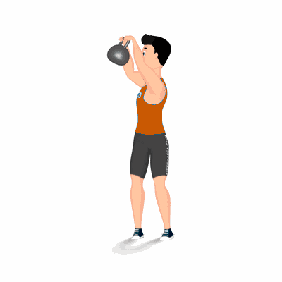

Wood Chop

Exercício funcional que auxilia a desenvolver e melhorar o condicionamento físico, resistência, flexibilidade, fortalecimento dos músculos e equilíbrio.
Ficha Técnica
Tipo: CrossFit
Grupo Muscular: Corpo
Aparelho: Nenhum
Músculos: Nenhum
Como realizar
- Na posição em pé;
- Pés afastados na largura dos ombros, segure um haltere com as duas mãos;
- Rotacione o torso para à direita e levantar o haltere até o ombro direito;
- Elevar a mão até que ela esteja sobre o ombro direito;
- Agache ao rotacione o torso para lado esquerdo, trazendo o haltere na diagonal próximo do quadril esquerdo;
- Repita os movimentos pelo número de repetições orientado pelo professor.
 RC STORE
RC STORE